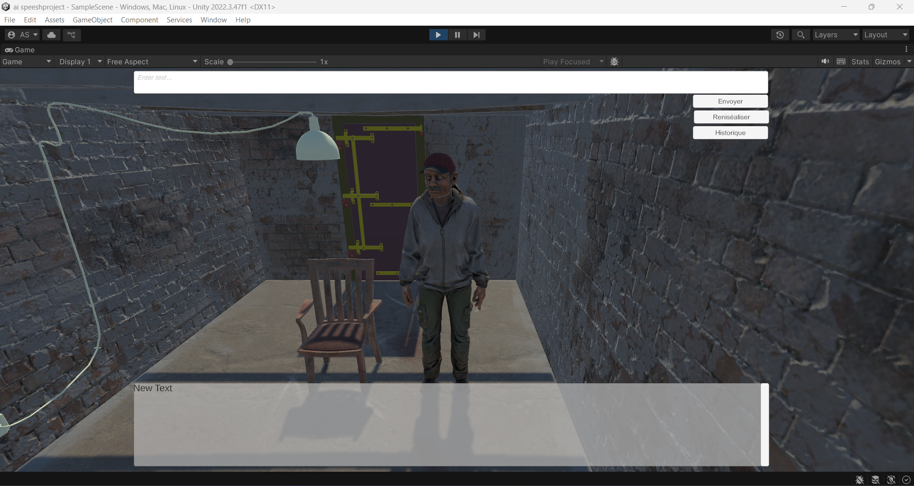
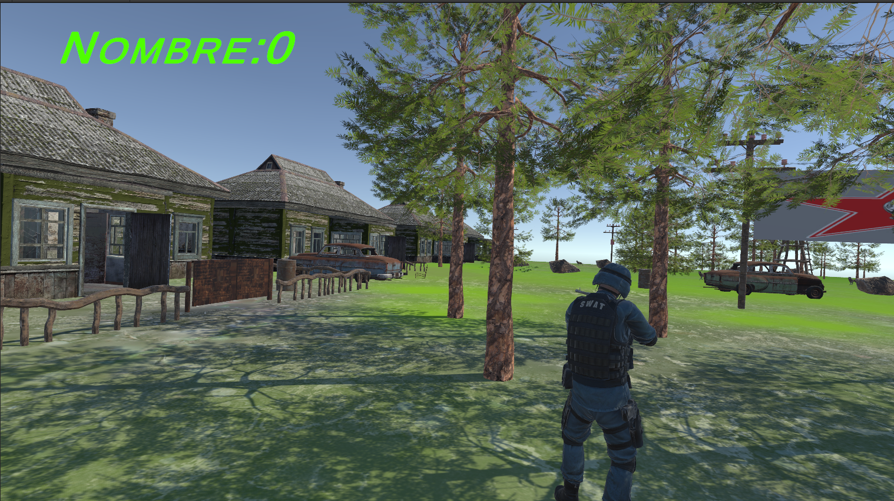
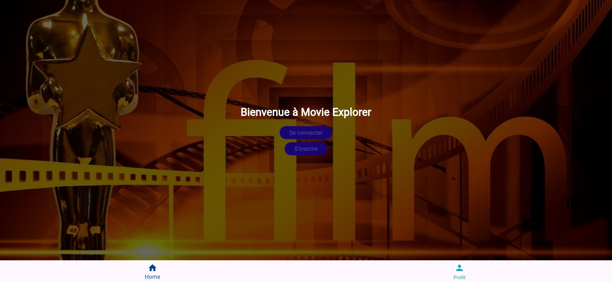

Découvrez mes travaux en développement web, modélisation 3D, et bien plus encore.

AI avec Unity
Création d'un PNJ Interactif avec Animations et Synthèse Vocale.
Dans ce projet, un personnage non-joueur (PNJ) a été développé pour interagir avec les utilisateurs dans Unity. Le PNJ intègre des animations dynamiques (Idle, Thinking, Talking) pour rendre l'expérience immersive. L'avatar utilise l'API Groq pour générer des réponses textuelles basées sur l'intelligence artificielle et l'API Play.ht pour transformer ces réponses en synthèse vocale, offrant une expérience sonore réaliste. Un système de mémoire permet au PNJ de se souvenir des conversations, et une interface utilisateur intuitive gère les échanges. Ce projet met en avant des techniques avancées en animation, en intégration d'API, et en gestion des états d'animation.

Jeu de chasse avec Unity
un jeu de chasse immersif et interactif développé avec Unity et C#.
Le joueur incarne un chasseur évoluant dans un monde réaliste où la physique joue un rôle central. En utilisant des mécaniques basées sur des colliders, rigidbodies, forces, et ragdoll physics, le jeu offre des combats fluides et dynamiques contre des loups et des monstres.
Le gameplay inclut des interactions réalistes telles que des portes articulées avec des joints, des simulations de forces précises pour les tirs, et une optimisation avancée pour garantir des performances fluides. Programmé en C#, chaque aspect du jeu met en valeur des scripts robustes et efficaces, assurant une expérience captivante et fluide pour le joueur.

application film
Movie Explorer est une application Flutter conçue pour explorer et afficher des informations sur des films.
L'application propose une interface utilisateur intuitive avec des fonctionnalités telles que la recherche de films, l'affichage des détails d'un film, et la navigation entre différentes pages (Accueil, Profil, Paramètres). Les utilisateurs peuvent se connecter ou s'inscrire via des formulaires avec validation des champs. Le projet met en œuvre des concepts clés comme la gestion d'état avec setState, les appels API HTTP, et une navigation fluide entre les écrans.

Création de ce Portfolio
Ce portfolio a été réalisé en combinant HTML, CSS, et JavaScript pour créer un design moderne et interactif.
L’approche UX (User Experience) a été intégrée pour assurer une navigation intuitive et agréable. Chaque page a été optimisée pour être responsive, offrant une expérience fluide sur tous les appareils, qu’il s’agisse d’un ordinateur ou d’un mobile. Les projets sont mis en valeur grâce à des animations légères et des boutons dynamiques. L’utilisation d’éléments interactifs, tels que des vidéos, des modales et des liens vers GitHub, renforce l’engagement de l'utilisateur et met en avant les compétences techniques présentées dans ce portfolio..

Stage de fin d’études — Détection d’objets sur chantiers ferroviaires
Évaluation de l’impact des données synthétiques et génératives (Unity et CIA Framework) sur
l’entraînement de modèles de détection d’objets dans des environnements de chantiers ferroviaires.
Stage réalisé au sein de l’équipe Deep’ILIA de l’Université de Mons.
Le projet avait pour objectif d’étudier comment l’utilisation de données artificielles pouvait améliorer
la performance des modèles de vision par ordinateur dans des contextes industriels complexes.
La première étape consistait à simuler des scénarios de risque sur des chantiers ferroviaires en utilisant Unity HDRP,
afin de générer des scènes 3D réalistes avec différentes conditions météo, d’éclairage et de positionnement des caméras.
Ces scènes ont permis de produire automatiquement des images annotées à l’aide du module Unity Perception.
Parallèlement, des images ont été générées à l’aide du framework CIA, basé sur des modèles de diffusion, pour enrichir
la diversité du jeu de données en introduisant des variations de contexte et de rendu visuel.
Les différents jeux de données (réels, synthétiques, génératifs et mixtes) ont ensuite été utilisés pour l’entraînement
de plusieurs modèles de détection d’objets (YOLOv11) sur Google Colab Pro.
Les performances ont été évaluées à l’aide de métriques standardisées telles que la précision, le rappel et le mAP.
Les résultats ont montré que les données synthétiques seules restaient limitées pour les conditions réelles,
mais que la combinaison de données réelles, synthétiques et génératives permettait d’améliorer la robustesse
et la généralisation des modèles de détection.
 Code GitHub
Code GitHub